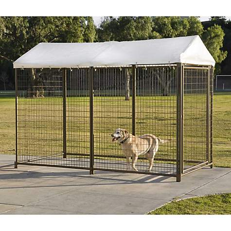

More Puppy Pampering Info
For more information on other ways to pamper your puppy, simply click on the following link: babble
Puppy Massages are a great way to calm an overwhelmed or hyper puppy.

A Dog Run will keep your puppy protected from other animals or intruders. They're easy to install and some are reasonably priced.
Some puppies are picky and they won't eat anything. That's why it's important to learn what they enjoy eating and try to mimic their taste buds. Homemade Dog Treats are one of the best ways to pamper your puppy. They get to enjoy their treats, which makes training them a much easier process.
For more information on other ways to pamper your puppy, simply click on the following link: babble